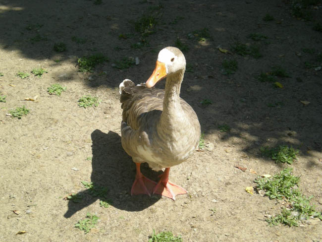

hey little buddy!! I love animal photography, i always take my time around animals to try and build a sense of trust so they'll let me take pictures, and you'll see more of this when we get to squirrels, my favorite :)
hovertest
hey little buddy!! I love animal photography, i always take my time around animals to try and build a sense of trust so they'll let me take pictures, and you'll see more of this when we get to squirrels, my favorite :)hey little buddy!! I love animal photography, i always take my time around animals to try and build a sense of trust so they'll let me take pictures, and you'll see more of this when we get to squirrels, my favorite :)hey little buddy!! I love animal photography, i always take my time around animals to try and build a sense of trust so they'll let me take pictures, and you'll see more of this when we get to squirrels, my favorite :)hey little buddy!! I love animal photography, i always take my time around animals to try and build a sense of trust so they'll let me take pictures, and you'll see more of this when we get to squirrels, my favorite :)hey little buddy!! I love animal photography, i always take my time around animals to try and build a sense of trust so they'll let me take pictures, and you'll see more of this when we get to squirrels, my favorite :)
capyskill
"VA.1.2 Organize and develop a project plan"
my chosen capyskill was to organize and develop a project plan, which for me meant to come up with my idea for the website and to be able to create everything i would need for that vision to come true
not a perfect explination, but how this worked was that i had simply taken my time first to think out what i wanted to do and what i wanted it to look like before starting to work on the code itself. often i start directly with coding and add ideas as i see what works and what dosen't, i still incorperated some of that into this project and while i don't think it's a bad way to work at all, but it often takes more time.